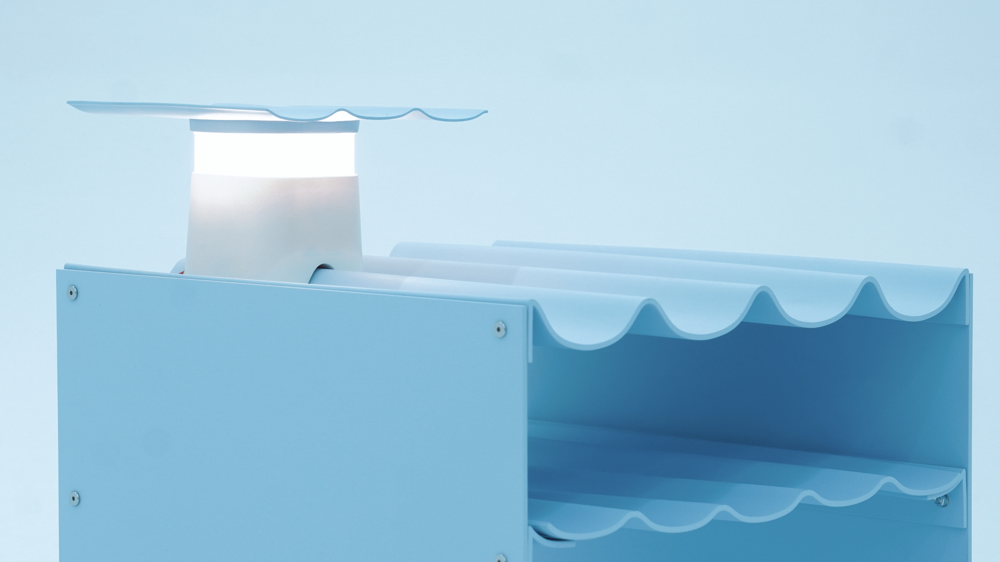
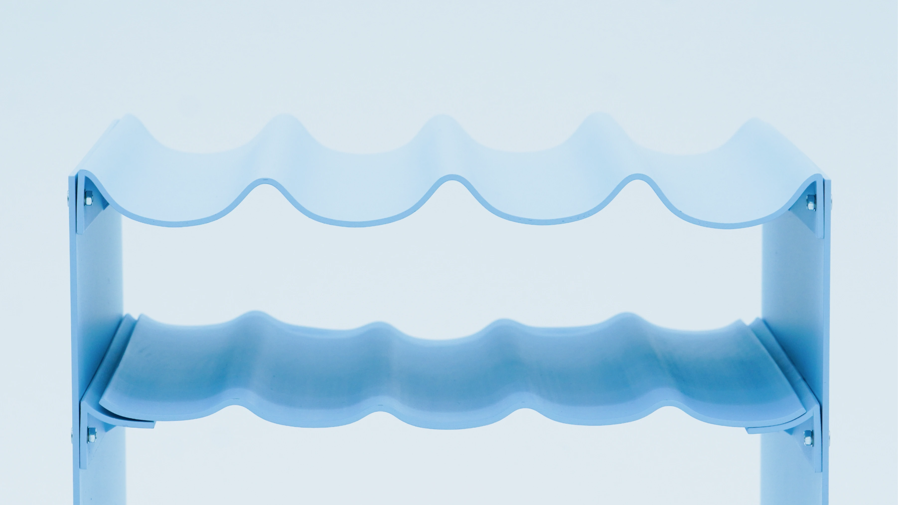
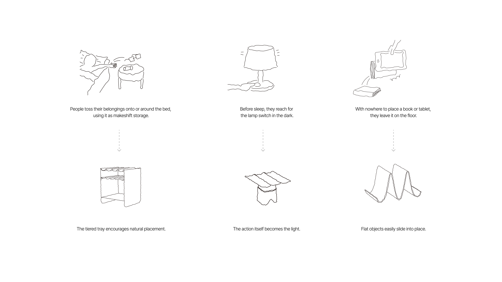
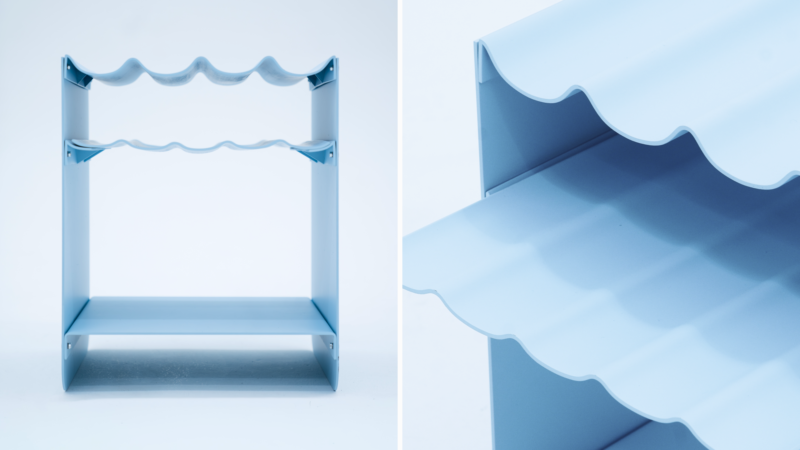
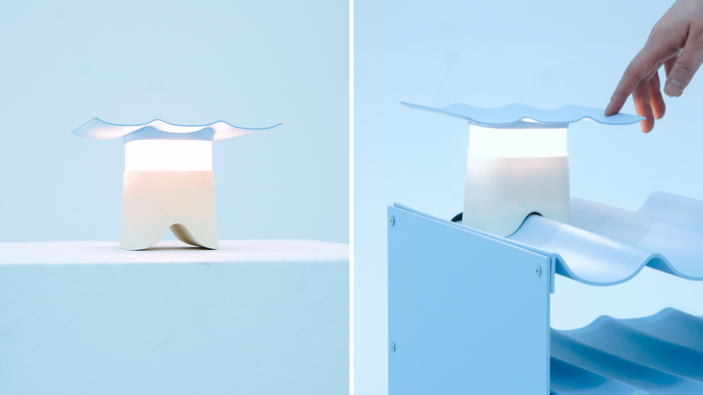
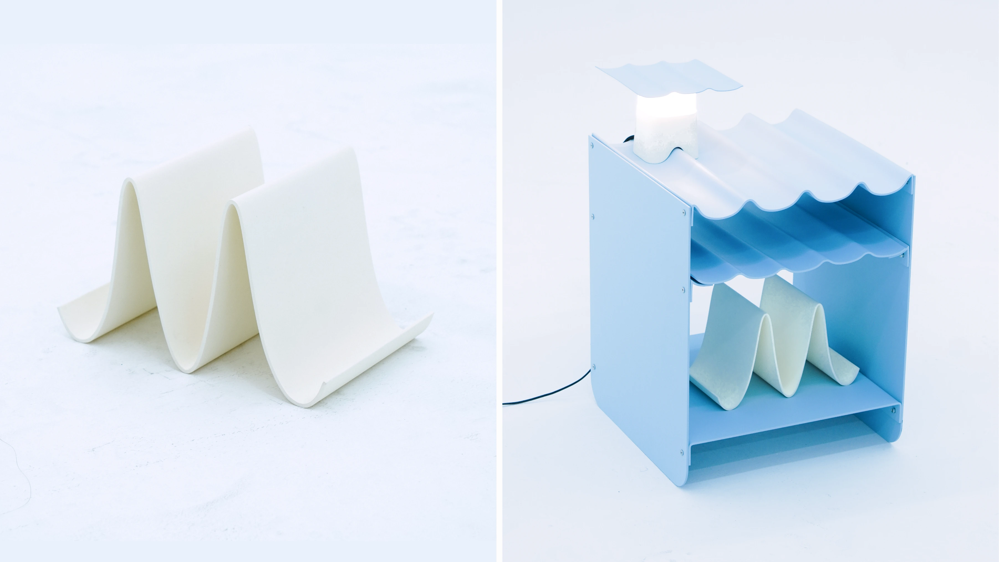
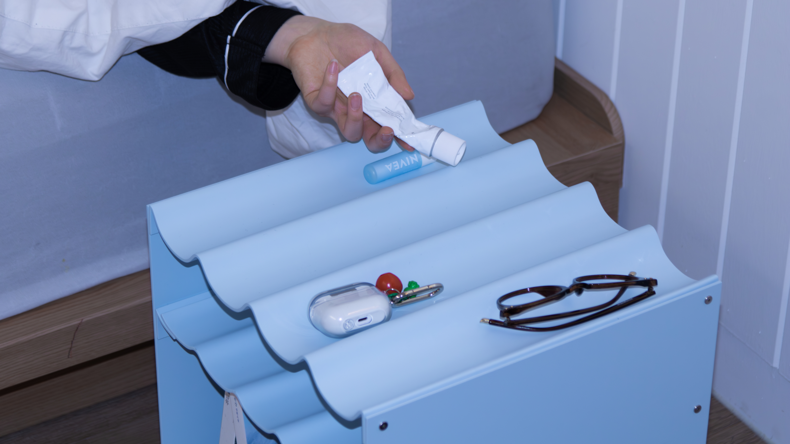
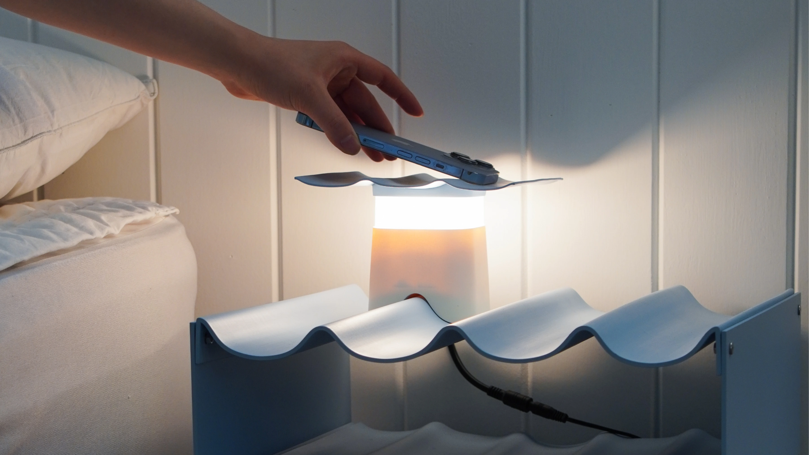
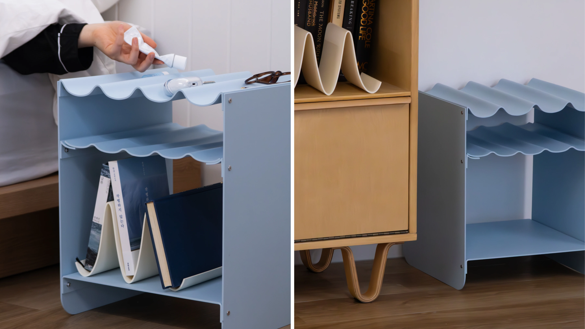
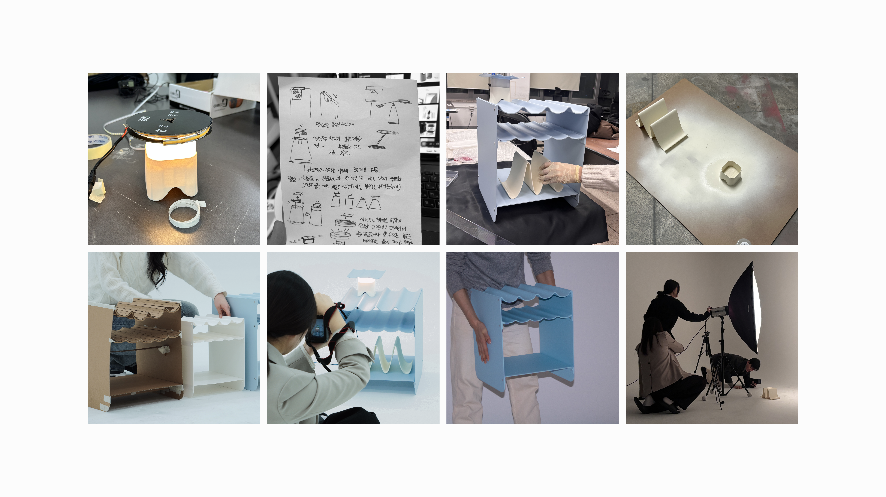

Duldeum

We focused on the familiar act of feeling around with your fingertips or casually setting objects down with a “toss” in the dark before going to sleep. Inspired by this everyday behavior, the product is designed so that objects can be easily placed and found again without needing to see them. By reducing unnecessary searching in the dark, it creates a more natural and effortless nighttime experience.
잠들기 전 어둠 속에서 손끝으로 주변을 더듬거나 물건을 ‘툭’ 내려두는 행동에 주목했습니다. 덜듬은 이 익숙한 장면에서 출발해, 보지 않아도 물건을 쉽게 놓고 다시 찾을 수 있도록 형태와 위치를 설계한 제품입니다. 이를 통해 불필요하게 주변을 더듬는 행동을 줄이고, 더 자연스러운 밤의 사용 경험을 만듭니다.

Inspired by the gentle rise and fall of waves, the structure features varying heights that help keep objects from slipping off. Even when objects are casually placed down with a “toss,” they naturally settle into place and remain easy to locate and recognize in the dark.
부드럽게 오르내리는 물결 형태에서 영감을 받았습니다. 높낮이의 차이를 지닌 구조는 물건이 쉽게 떨어지지 않도록 하며, ‘툭’ 내려두어도 자연스럽게 자리 잡고 어둠 속에서도 쉽게 인식되도록 설계되었습니다.


Conventional flat stools can cause objects to roll or fall when casually placed down. Deuldeum is designed with a wave-shaped surface that keeps belongings securely in place, inspired by the habit of dropping things beside the bed before sleep.
기존 평평한 스툴은 물건을 툭 내려놓으면 굴러가거나 떨어지는 문제가 있습니다. 덜듬은 잠들기 전 무심코 물건을 내려놓는 행동에 주목해, 물결 형태의 상판 안쪽에 물건이 안정적으로 자리 잡도록 디자인한 스툴입니다.

A mood lamp designed to complement the stool’s wave-shaped form. Simply placing a phone or book on top naturally closes the lamp and turns it on by weight.
스툴의 물결 형태와 조화를 이루는 형태의 무드등입니다. 전원 버튼을 더듬어 찾을 필요 없이, 휴대폰이나 책을 올려두면 무게에 의해 자연스럽게 닫히며 자동으로 점등됩니다.

A bookshelf inspired by the gentle waves of water. Books and slim objects like iPads can be easily slid into the spaces between the waves.
물결 무늬에서 영감을 받은 책꽂이 입니다. 물결 사이사이에 책, 아이패드 같은 슬림한 제품을 밀듯이 끼워넣을 수 있습니다.




Designed by Jo Haon, Jin Hakyung, Song Miju, Jo Chambi, Choi Gayoun
Studioi × HiPD Winter Project, Hongik Industrail Design Student Group
December 2025 – February 2026